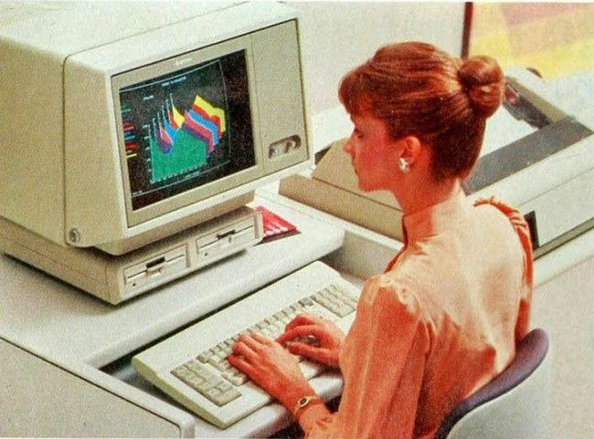

Databehandling er enhver målrettet aktivitet som krever, nyter godt av, eller skaper databehandlingsutstyr. Det inkluderer studiet og eksperimenteringen av algoritmiske prosesser og utviklingen av både maskinvare og programvare. Databehandling har vitenskapelige, ingeniør-, matematiske, teknologiske og sosiale aspekter. De viktigste databehandlingsdisiplinene inkluderer datateknikk, informatikk, cybersikkerhet, dataanalyse, informasjonssystemer, informasjonsteknologi og programvareteknikk.
Begrepet databehandling er også synonymt med telling og beregning. Tidligere ble det brukt om handlingen utført av mekaniske databehandlingsmaskiner, og før det om menneskelige databehandlere. Databehandling spiller en avgjørende rolle i en rekke områder, inkludert vitenskap og forskning, forretningsdrift, helsevesen, utdanning, kommunikasjon og underholdning. Med stadig økende mengder data som genereres og samles inn, har databehandling blitt en uunnværlig del av vår moderne digitaliserte verden.
Viktige nøkkelegenskaper ved databehandling:
| Inndata (Input): |
Dette er den første fasen av databehandling, hvor data samles inn fra ulike kilder. Inndata kan være alt fra tekst og tall til lyd, bilder og video. |
| Behandling (Processing): |
Dette trinnet innebærer å manipulere og bearbeide dataene på ulike måter, avhengig av formålet. Dette kan inkludere beregninger, sortering, filtrering, transformasjon og annen form for datamanipulasjon. |
| Lagring (Storage): |
Dataene lagres på en eller annen form for lagringsmedium, enten midlertidig (for eksempel RAM) eller permanent (for eksempel harddisker eller SSD-er), slik at de kan hentes frem og brukes senere. |
| Utdata (Output): |
Dette er resultatene av databehandlingsprosessen, som kan være i form av rapporter, grafer, bilder, lyd eller annen form for informasjon som er nyttig for brukeren. |